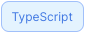
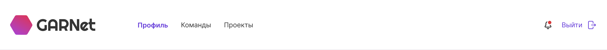
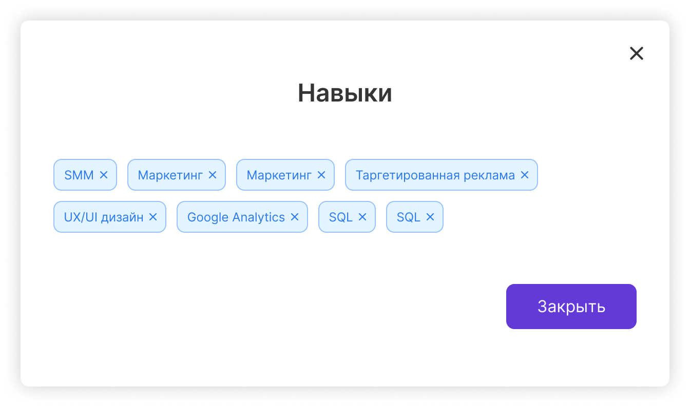
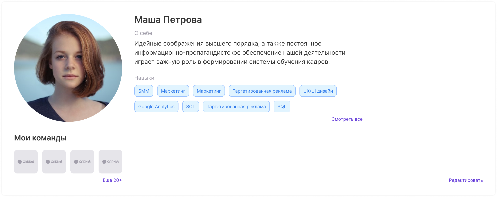
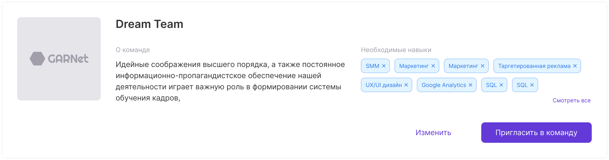
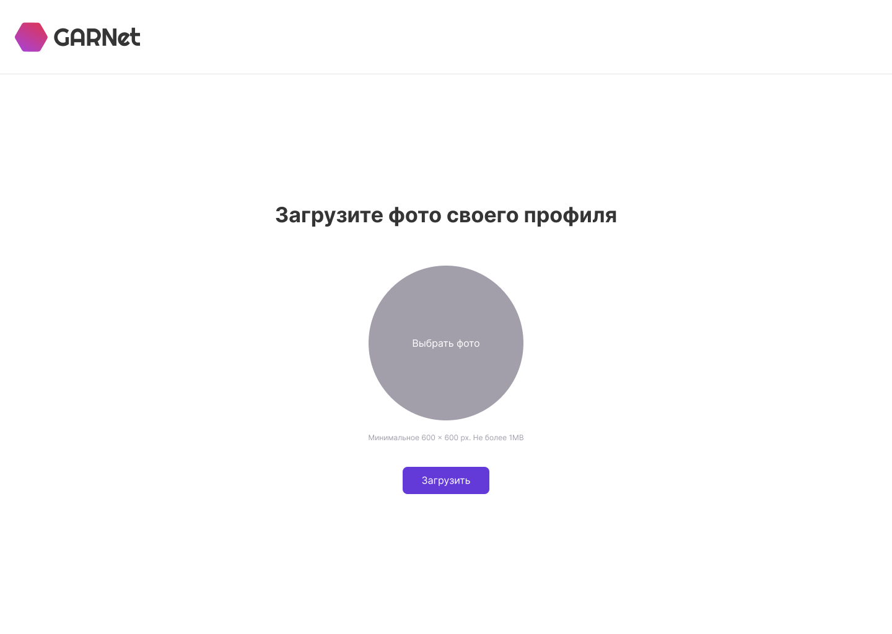
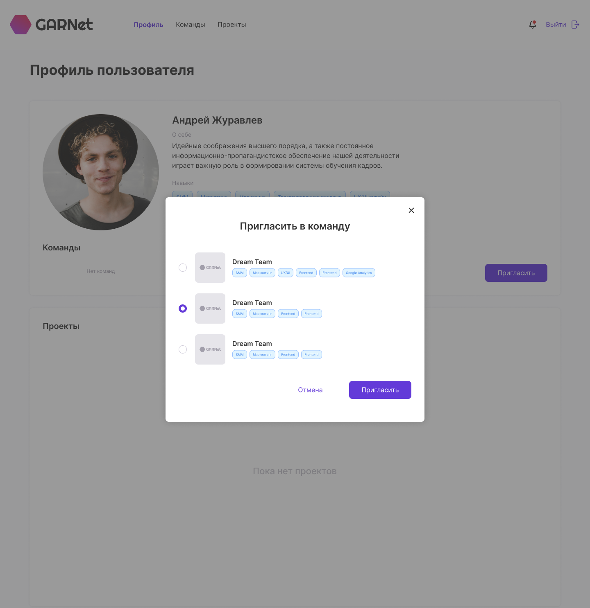

Как разрабатывался фронт-енд
Наши принципы - DDD
Мы следуем строго по Design Driven Development, поэтому разработка стартовала после завершения дизайна, а так же проработки всех возможных сценариев пользователя по приложению.
Наши принципы - SOLID
Наш проект - монорепозиторий. Каждый компонент, фрагмент, страница, хэлперы - все выделено в отдельный пакет со своими уникальными зависимостями
Пара слов о микро-сервисах
К сожалению, в этом проекте мы не смогли реализовать микро-сервисный подход к клиентской части. Не смотря на это мы все равно разделяем наш код по зонам ответственности. Например, авторизация в клиенте - это отдельное приложение/сервис, работающее отдельно от основного приложения
План работы над клиентской частью
- Собрать тему проекта
- Собрать UI kit
- Собрать фрагменты
- Собрать страницы
- Интегрировать с бэкендом
1. Тема проекта
Сбор темы происходит в полуавтоматическом режиме - на основании данных Figma и нашего собственного генератора @atls/figma-theme-cli мы стягиваем все уникальные данные из дизайна, которые затем можем использовать в верстке.
В наших проектах мы используем CSS-in-JS:
- styled-components
- emotion
В первую очередь мы ориентируемся на хороший DX, гарантирующий быструю разработку
Пример: цвета
export const colors = {
text: {
accent: 'rgba(99, 58, 216, 1)',
accentHover: 'rgba(161, 87, 255, 1)',
accentPressed: 'rgba(62, 41, 120, 1)',
error: 'rgba(216, 57, 57, 1)',
gray: 'rgba(162, 159, 171, 1)',
lightGrey: 'rgba(208, 204, 218, 1)',
primary: 'rgba(0, 0, 0, 1)',
white: 'rgba(255, 255, 255, 1)',
secondary: 'rgba(53, 53, 53, 1)',
darkBlue: 'rgba(46, 121, 234, 1)',
},
button: {
primary: {
default: {
background: 'rgba(99, 58, 216, 1)',
font: 'rgba(255, 255, 255, 1)',
border: 'transparent',
},
hover: {
background: 'rgba(161, 87, 255, 1)',
font: 'rgba(255, 255, 255, 1)',
border: 'transparent',
},
pressed: {
background: 'rgba(62, 41, 120, 1)',
font: 'rgba(255, 255, 255, 1)',
border: 'transparent',
},
disabled: {
background: 'rgba(162, 159, 171, 1)',
font: 'rgba(208, 204, 218, 1)',
border: 'transparent',
},
},
...
Пример: шрифты
export const fonts = {
primary: 'Inter',
}
export const fontSizes = {
normal: 12,
semiMedium: 14,
medium: 16,
regular: 20,
semiLarge: 22,
preLarge: 24,
extraHuge: 34,
}
Провайдер темы
import * as React from 'react'
import * as theme from './theme'
import { ThemeProvider as ProtoThemeProvider } from '@atls-ui-proto/theme'
import { ThemeProvider as EmotionThemeProvider } from '@emotion/react'
import { GlobalStyles } from './global.styles'
const CustomTheme = ({ children }) => (
{children}
)
export const ThemeProvider = ({ children }) => (
{children}
)
2. UI
Здесь мы собираем собственные компоненты, стилизуем их нашей темой. Идея следующая - собрав UI кит мы можем быстро верстать фрагменты.
Вдохновление, но не подражание


Нам нравится стандартизация подхода у библиотек готовых компонентов, таких как MaterialUI. Однако мы не хотим вендор лока, поэтому содержим свою кастомную библиотеку UI компонентов, которую используем во всех наших проектах.
Пример: тег (навыки)

import styled from '@emotion/styled'
import React from 'react'
import { FC } from 'react'
import { Condition } from '@ui/condition'
import { ClearIcon } from '@ui/icon'
import { Box } from '@ui/layout'
import { Text } from '@ui/text'
import { TagElementProps } from './tag.interfaces'
import { TagProps } from './tag.interfaces'
import { appearanceStyles } from './tag.styles'
import { shapeStyles } from './tag.styles'
import { hoverStyles } from './tag.styles'
import { containerBaseStyles } from './tag.styles'
const TagElement = styled(Box)(
containerBaseStyles,
appearanceStyles,
shapeStyles,
hoverStyles
)
export const Tag: FC = ({
children,
variant = 'primary',
size = 'normal',
close,
onClick,
}) => (
{children}
)
3. Фрагменты
Далее мы собираем из компонентов часто используемые фрагменты на страницах.
Примеры
 Примеры
Примеры
4. Страницы
Из полученных фрагментов мы делаем страницы.
Примеры
Примеры
5. Интеграция с бэкендом
- Авторизация - ORY Kratos и наша кастомная библиотека @atls/next-identity-integration
- Реверс прокси - ORY Oathkeeper
- Общение с бэкендом - Apollo Client